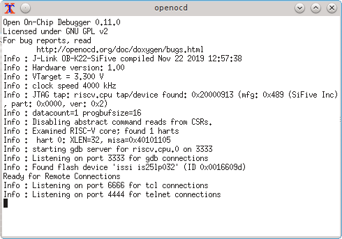
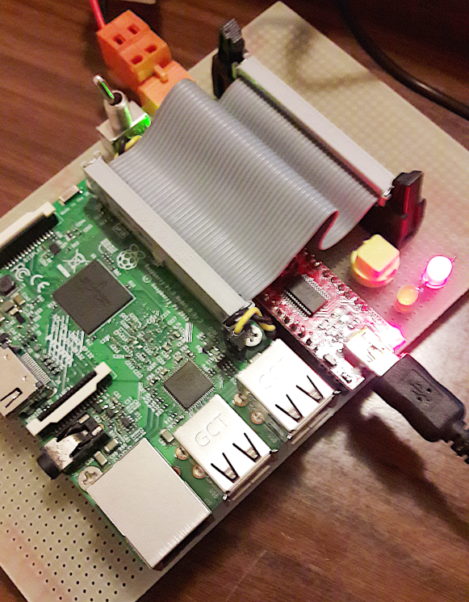

Next: Overall structure, Previous: SweetAda, Up: SweetAda [Index]
Welcome to SweetAda.
SweetAda is an Ada-based development environment suitable to build lightweight applications in CPU-driven electronic devices. Developed from scratch with simplicity in mind, SweetAda tries to fill the gap between a simple, yet reliable, software/firmware control system and big, complex, OS-based multitasked environment.
Next: Host environment, Previous: Overview, Up: SweetAda [Index]
The SweetAda system is composed of a top-level directory which holds other directories and software components. They are:
Next: Toolchains, Previous: Overall structure, Up: SweetAda [Index]
SweetAda is meant to run on major 64-bit mainstream environments, i.e., modern installation of POSIX/Linux, Windows, or OS X.
SweetAda requires installation of GNU toolchains, and is based on GNU Make, plus some little utilities. The OS should be able to create symbolic links.
In the following chapters, operations in a POSIX machine will be described when doing examples, unless otherwise noted.
It is highly advisable to perform commands in the SweetAda top-level directory (which exists as a variable SWEETADA_PATH in the build system). The Makefile machinery is able to infer the SweetAda path from the context, but this feature relies on standard Makefile idioms which could be invalidated by an "esotic" environment setup.
Hence, if you want to integrate SweetAda in a GUI, the glue logic should change the working directory before performing an action.
Note for Windows users: Many operations in SweetAda could need variables inherited from the environment; pay attention when setting variables in the command line shell, i.e. when you are concatenating many assignments use always double-quotes to protect arguments:
> SET "<variable_name>=<variable_value>" && SET "...
Also be sure to run commands in a shell with Administrator privileges, because some operations (like creating symbolic links) require elevation rights.
SweetAda requires some support from the OS environment. Apart the standard low-level utilities, like shell command/programs to copy or move files and other usual filesystem operations, the GNU Make is the fundamental component that drives the whole SweetAda build process.
GNU sed is a small utility to perform simple textual processing, and it used to filter strings and files should the shell have not enough computational power to perform these basic activities.
In some environments (Linux, and, if properly configured, also OS X) the GNU Make and sed utilities are natively present and there is no need to install them or specify theirs location in the filesystem, but this is not true under Windows and thus should be installed by means of thirdy-party packages. If you do not have these utilities available, please install them from your package provider, or download them from the SweetAda SourceForge repository. Remember, as a rule of thumb, to put the filesystem executable path in the visible part of the PATH environment variable which is then parsed by the shell. GNU Make must be immediately available since there is no point in running a Makefile without the GNU Make interpreter. The GNU sed utility could be installed directly in the "libutils" directory without the need to modify the environment setup.
SweetAda also requires (although they are not really strictly necessary from a system standpoint) three auxiliary programs, i.e, the GCC/GNAT wrappers and the elftool utility. They are provided as source programs to be built in the libutils/toolchain_tools directory. You need a system GCC compiler available online if you want to change their behaviour (which is not recommended, though). See Toolchain tools.
The GCC wrapper is a small piece of code that sits between the compiler driver and the compiler executable. It analyzes command line parameters, selects verbosity level and instructs the compiler executable to generate additional output files, like assembler listing and Ada expanded source code. There is a companion wrapper, the "GNAT wrapper", but its use is limited to print brief informations when GNATMAKE processes with’ed units.
elftool is a small utility that dumps the output object code. It is used mainly for a clean visual output in order to easily parse ELF sections. elftool is anyway optional, and you can avoid its use by setting a variable in the top-level configuration.in file, so the standard "size" toolchain executable is thus used.
runsweetada is a small front-end scripting utility to ease the execution of a SweetAda, mostly used with virtual targets that use an emulator like QEMU.
All these utilities can be downloaded as executables from the SweetAda SourceForge repository. See References. Browse for the directory corresponding to your environment and select the last archive available. Except GNU Make, which should be installed in a PATH-visible directory, all other utilities could be installed in the "libutils" subdirectory of the SweetAda filesystem hierarchy.
In order to perform actions, the GNU Make interpreter should be invoked, followed by the target, like in:
$ make configure
(provided your working directory is the SweetAda top-level-directory).
The two shell scripts menu.sh (Bash) and menu.bat (Windows cmd.exe) are useful to ease the invocation of the GNU Make executable provided in the toolchain package. Thus, eventually adjust the script near the "Main loop" entry point, as shown in the next lines:
menu.bat: REM defaults to standard installation directory, see configuration.in SET MAKEEXE="C:\Program Files\SweetAda"\bin\make.exe <---
menu.sh:
...
darwin)
# use SweetAda GNU Make (try a standard installation prefix)
SWEETADA_MAKE=/opt/sweetada/bin/make <---
...
msys)
# use SweetAda GNU Make (try a standard installation prefix)
SWEETADA_MAKE="/c/Program Files/SweetAda/bin/make.exe" <---
Once the script is properly adjusted, just execute the script by specifying the desired action, like as a Makefile invocation:
$ ./menu.sh help
or:
> menu.bat help
If everything is working fine, you should see the help from the master Makefile:
make help (default) Display an help about make targets. make CPU=<cpu> [CPU_MODEL=<cpu_model>] RTS=<rts> [TOOLCHAIN_NAME=<toolchain_name>] rts Create RTS <rts> for CPU <cpu> with toolchain <toolchain_name>. make PLATFORM=<platform> [SUBPLATFORM=<subplatform>] createkernelcfg Create the 'kernel.cfg' main configuration file. make configure Create configuration/support files for this platform. make all Perform the same as 'make kernel'. make kernel Build the kernel binary output file 'kernel.o'. make postbuild Perform platform-specific finalizations and create a physical kernel file 'kernel.rom'. make session-start Perform session start activities. make session-end activities Perform session end activities. make run Run the kernel. make debug Run the kernel with debugger active. make infodump Dump essential informations. make kernel_libinfo Generate library informations. make kernel_info Generate kernel informations. make clean Clean object files. make distclean Clean object files and all configuration/support files. make probevariable PROBEVARIABLE=<variablename> Obtain the value of a variable. Available CPUs: AArch64 ARM AVR M68k MIPS MicroBlaze NiosII PowerPC RISC-V SPARC SuperH System390 x86 x86-64 Available RTSes: sfp zfp Available Platforms: ATmega128_MinimalDevelopmentBoard Altera10M50GHRD Amiga-FS-UAE ArduinoUNO Atlas CobaltRaQ2 DE10-Lite DECstation5000.133 DigiConnectME Dreamcast FRDM-KL46Z GEMI HiFive1 IntegratorCP LEON3 M5235BCC ML605 MPC8306-SOM MPC8306-Switch MPC8315e MSP432P401R MVME162-510A Malta MemecFX12 OPTi386WB PC-x86 PC-x86-64 QEMU-AArch64 QEMU-AVR QEMU-MIPS QEMU-RISC-V-32 QEMU-i486 RaspberryPi3 SBC5206 SPARCstation5 STM32F769I Spartan3A-EK Spartan3E-SK Synergy-S5D9 System390 Taihu Template TestPlatform XilinxZynqA9 ZOOM
SweetAda supports whitespaces in filepaths although this is considered bad practice.
Next: Toolchain tools, Previous: Host environment, Up: SweetAda [Index]
The SweetAda system is distributed with GNU toolchains for every CPU it can handle. Altough toolchains are quite generic, SweetAda does not employ neither the whole standard GNU FSF RTS source package nor the LibGCC library.
The SweetAda RTS is a ZFP/SFP run-time that avoid to include subprograms from the original implementation, which is quite big and requires an underneath operating system.
The LibGCC library, which is present like in every other standard toolchain, is bypassed and partially reimplemented in Ada. Only some low-level machine-language files are required, carefully extracted from the LibGCC sources. This way, you have a system which is under your complete control at the source level, and every bit of information is known. Code output by the build system is thus coming directly from the compiler, without extra source files inclusion. Anyway, the standard LibGCC binaries can be selected with a configuration variable.
GNU toolchains are referenced by a "canonical triplet", e.g. "i686-unknown-linux"; since this name identifies also a working directory component of the toolchain, every time we refer to a toolchain this string should be used, like stating the current toolchain in the main configuration.in.
Next: Emulators, Previous: Toolchains, Up: SweetAda [Index]
SweetAda is not tied to SweetAda toolchains, and can be used with your own GNU toolchain.
|
NOTE: |
Anyway, SweetAda needs two small utilities, a GNATMAKE wrapper and a GCC wrapper, that could be built from sources if you have a C compiler available online. The current setup is for a system GCC C compiler.
Go into the directory libutils/toolchain_tools and edit the Makefile by adjusting some variables:
CC := gcc # C compiler LIBELF := /usr/local/lib/libelf.a # location of libelf library
For elftool, you sould have libelf installed in your environment setup, but it is not strictly needed. Remember that GNU toolchain installation prefixes refers to the whole hierarchy, so do not add a trailing "/bin".
Then, after a proper Makefile setup:
$ make wrappers $ make install-wrappers
will build and install wrappers,
$ make all $ make install
will build and install wrappers and elftool.
This procedure should work also on a Windows cmd.exe shell, provided you have the GNU Make utility available online.
runsweetada is a scripting utility coupled with the IOEMU I/O emulator, which is an extension to QEMU, FS-UAE or GXemul. See IOEMU scripting. Its purpose is to centralize the startup of executables so to not have multiple scripts laying around in the filesystem. When your target platform is an emulator, it is the perfect place to put filesystem operations and options, but it does work also as a generic execution front-end. runsweetada has a few command line parameters:
-d <variable>[=value] define an environment variable -f <filename> read configuration file name <filename> (default = "sweetada.cfg") -k <path> define SWEETADA_PATH=<path> (default = current directory) -p <directory> define PLATFORM_DIRECTORY=<directory> (default = ".") Currently there is no source code for runsweetada because it is under heavy redesign.
|
NOTE: |
Next: Menu front-ends, Previous: Toolchain tools, Up: SweetAda [Index]
SweetAda does use emulators in order to test the code without the need of physical hardware. Three emulators are being provided at least on a Linux machine: QEMU (generic for nearly all targets), FS-UAE (for Amiga machines) and GXemul (for the Dreamcast console). Note that FS-UAE and GXemul are only provided for Linux machines.
When installing an emulator package, pay attention to the top-level directory hierarchy of the archive, because it refers to the root directory of the machine filesystem. Hence, unpack them referring to, say, "C:" or "/".
Next: Building the RTS, Previous: Emulators, Up: SweetAda [Index]
SweetAda has three shell utilities to ease invoking the GNU Make interpreter.
"menu.sh" is a pure Bash script.
"menu-dialog.sh" is a Bash script for machines which have the dialog utility available.
"menu.bat" is a cmd.exe Windows script.
Bash menus are able to produce logfiles of a SweetAda build, just set VERBOSE=1 before running them if you want a detailed description of the operations performed by the build engine.
Note that only kernel build actions are logged, so, if you give directly a "run" action instead of the more correct sequence "all, run", then no log files will be produced.
Next: Configuration, Previous: Menu front-ends, Up: SweetAda [Index]
The very first action to perform after an installation is to build the Ada Run-Time System.
The RTS is being built by means of a Makefile target:
$ make CPU=<cpu> [CPU_MODEL=<cpu_model>] RTS=<rts> [TOOLCHAIN_NAME=<toolchain_name>] rts
For example:
$ make CPU=x86 RTS=sfp TOOLCHAIN_NAME=i686-sweetada-elf rts $ make CPU=SuperH CPU_MODEL=SH7032 RTS=zfp TOOLCHAIN_NAME=sh-sweetada-elf rts
Please note that:
This will build the RTS. If you do not specify the toolchain in the classic "canonical triplet name form" (e.g., "arm-unknown-eabi"), then the toolchain found in the mapping of the top-level configuration.in will be used.
Once you have built the RTS, it is persistent, and you don’t need to repeat this operation, unless you modify RTS source files.
Supported CPUs are in the rts/src/targets directory. Every CPU directory contains some Makefile fragments, and the Makefile.rts.in, which is used to state GCC switches used during the compilation. Remember that no CPU switches should be used, because the build system compiles the RTS for every CPU configuration, so you should specify only global features, like, e.g., use of global pointers or object symbol naming.
SweetAda comes with two RTSes, a ZFP and an SFP. The RTS which will be used is configurable in the top-level configuration.in file. A proper profile should be coupled along the RTS type, which configures system-wide pragmas (which are in turn configurable by means of the gnat.adc.in configuration template).
Next: Makefile targets, Previous: Building the RTS, Up: SweetAda [Index]
SweetAda configuration is managed by a central Makefile, which loads configuration files in sequential steps.
Configuration of SweetAda is done mainly with the help of two configuration files: "main" (or "system") configuration file, and a "platform" configuration file. The main configuration file (located in the top-level directory) defines general, target-agnostic characteristics, like stating Ada95 or Ada2012 mode, the optimization level, and so on; the platform configuration file (located in the platform’s directory) defines in greater detail how the target software is going to be generated, and various parameters affecting low-level behaviour.
Both files are, as a matter of fact, Makefile fragments that are going to be incorporated in the build system at compile-time. Being the SweetAda build system based on GNU Make, many facilitations are possible (like variable substitutions) and, if correctly arranged, configuration items can be made modular and easily changeable.
The final output product of SweetAda compilation is the file "kernel.o". Its format depends on the type of toolchain used, but it is almost exclusively an ELF-class object file.
|
NOTE: |
The master Makefile try to detect the type of machine it is running on, and configuration of SweetAda begins by reading the system configuration file "configuration.in".
Essential variables are set to a default value, like the path to the toolchain prefix, the build model, RTS type, profile, and so on.
One important aspect is that configuration variables could be introduced (and could override pre-defined ones) at various stages of the configuration. Obviously, further and more specific configuration files are loaded in sequence from the very few basic information found in the top-level configuration.in.
Then, if it exists, a "kernel.cfg" file from the top-level directory is loaded. kernel.cfg contains the hardware platform which will be the build target. If kernel.cfg is missing, you can specify the platform (and eventually the subplatform) by assigning the shell environment variables PLATFORM and SUBPLATFORM, which in that case take precedence over an existing file. PLATFORM should be a valid directory in the "platforms" subdirectory, and SUBPLATFORM should be a valid subdirectory of the PLATFORM directory, named "platform-<SUBPLATFORM>".
$ PLATFORM=PC-x86 SUBPLATFORM=QEMU-ROM make createkernelcfg
|
NOTE: |
Once you choose a platform, you can create the kernel.cfg with the Makefile auxiliary target "createkernelcfg".
Following this command, you can check the presence of a correct kernel.cfg file. The contents of kernel.cfg will be something like:
PLATFORM := PC-x86 SUBPLATFORM := QEMU-ROM
|
NOTE: |
Once kernel.cfg does exist, it will be used until you issue a "make distclean" command, which erases every configuration file and objects from last compilation.
|
NOTE: |
After the top-level configuration file is loaded, and thus Makefile knows the platform, the configuration.in found in that directory is loaded (e.g., ./platforms/ML605/configuration.in). Here you can specify nearly everything about the target machine, like the CPU model, fine-tuning compiler switches, run- or debug-related auxiliary scripts, and so on. If you need to create some information that will be used by external scripts, this is right place. Pay attention to export every variable you are creating that is not known by the build system, otherwise the external scripts are not able to access it.
CPU := x86 CPU_MODEL := i586 GCC_SWITCHES_PLATFORM += -march=i586 -Wa,-march=i586 LD_SWITCHES_PLATFORM += OBJDUMP_SWITCHES_PLATFORM += POSTBUILD_ROMFILE := Y OBJCOPY_SWITCHES_PLATFORM += --output-target=binary --gap-fill=0x00 USE_CLIBRARY := Y USE_APPLICATION := test-PC-x86 ADDITIONAL_OBJECTS += ctest SESSION_START_COMMAND := SESSION_END_COMMAND := RUN_COMMAND := $(RUNSWEETADA) -k "$(SWEETADA_PATH)" -p "$(PLATFORM_DIRECTORY)" -f qemu.cfg DEBUG_COMMAND := $(RUN_COMMAND) -d DEBUG_QEMU export WIRESHARK := /usr/bin/wireshark
|
NOTE: |
Having knowledge of the hardware configuration, then the configuration.in in the appropriate CPU hierarchy is loaded (e.g., cpus/MIPS/configuration.in).
|
NOTE: |
Then, the top-level "Makefile.tc.in" file is taken into account. This a very important part of the global configuration scenario, since it is responsible of the setup parameters for the compiler toolchain, compilation switches, warning switches and executable paths. If you want to suppress checks, warnings, or change programming style layout, you can comment/uncomment the appropriate compiler switch.
Now that the configuration setup is complete, the build system is ready for the next step, the configuration target proper.
$ make configure
The "configure" Makefile target will call the homonym target in every sub-Makefile concerned, e.g., "core", "modules", "drivers", and the platform. This way, fixing of files that should be included in the build or a pre-processing from a template file can take place. As an example, files from SUBPLATFORM specific directory could be symlinked in the platform set of files, the ?gnat.adc? file will be created from the template file "gnat.adc.in", and so on.
The build system will reply by writing a brief configuration status:
Configuration parameters: PLATFORM: PC-x86 SUBPLATFORM: QEMU-ROM CPU: x86 CPU MODEL: i586 OSTYPE: linux SWEETADA PATH: /root/project/sweetada TOOLCHAIN PREFIX: /opt/sweetada TOOLCHAIN NAME: i686-sweetada-elf RTS ROOT PATH: /root/project/sweetada/rts/sfp/i686-sweetada-elf RTS PATH: /root/project/sweetada/rts/sfp/i686-sweetada-elf/. RTS: sfp PROFILE: sfp USE LIBADA: Y BUILD MODE: MAKEFILE OPTIMIZATION LEVEL: 1 MAKE: make GCC VERSION: 11.1.0 GCC SWITCHES: -march=i586 -Wa,-march=i586 GCC MULTIDIR: . LD SCRIPT: linker.lds LD SWITCHES: OBJCOPY SWITCHES: --output-target=binary --gap-fill=0x00 OBJDUMP SWITCHES:
The SweetAda Makefile build system can be queried. The special Makefile target "probevariable" outputs the value of a configuration variable, so, e.g., you can execute a command line like:
VERBOSE= PROBEVARIABLE=PROFILE make -s probevariable
and the build system will print the value associated with the variable PROFILE. A script could intercept the output by means of a redirection and use this information. Note that the VERBOSE variable is set empty and the the "-s" option is passed down to the Makefile so the output is not cluttered with other non-interesting output.
Next: Ada environment, Previous: Configuration, Up: SweetAda [Index]
Following a "make createkernelcfg" and "make configure", the build system is ready to build SweetAda.
At this point, you should have available the RTS to further proceed with the build. See Building the RTS.
The next phases will be a "make all" (or "make kernel") and, optionally, "make postbuild". Then SweetAda could be executed by means of the "make run" or "make debug" commands.
Putting it all together, we can summarize the following fundamental steps:
1) make createkernelcfg
2) make configure
3) make all
4) make postbuild (if needed)
5) make run/make debug
Makefile targets have the following properties:
Obviously, if you change something in configuration.in files (say, a compiler switch or the RTS profile), then you should do a "make clean" to rebuild everything. Other heavy changes may requires a re-configuration from the scratch.
Makefile targets have also a "localization". Although handled by the master Makefile, the functional part is generally encoded in sub-Makefiles rules, either one in a directory like core, or the cpu one, or the platform one. For example, "make configure" has the effect of execute the "configure" Makefile target in every component of SweetAda (even if some components do not need a configuration at all). "make postbuild" is instead platform-dependent, and thus only the platform’s sub-Makefile is called.
If you want to perform special actions, you could place commands in the corresponding rule. But a non-intrusive method like calling a script in the RUN_COMMAND specification of the platform’s configuration.in file could be better.
Next: GPRbuild mode, Previous: Makefile targets, Up: SweetAda [Index]
The SweetAda build system try to supply a complete environment to build system code for a target. In order to instruct the compiler, the linker, the binder, and all accompanying tools, various files exist.
These files are Makefile.tc.in, Makefile.st.in, Makefile.wr.in and gnat.adc.in.
Makefile.tc.in is a Makefile fragment that is loaded by the master Makefile and contains all compilation switches for a toolchain. It, in turn, loads Makefile.st.in and Makefile.wr.in, other Makefile fragments which contain style switches and warning switches. There you can selectively comment/uncomment a toolchain switch to suite your needs.
For example, if you want to optimize code and reduce the size of the executable, you could turn off the "-gnatE" switch that enables dynamic checks for access-before-elaboration on subprogram calls and generic instantiations.
Anyway, pay attention that these files really should not be seen as configuration files at will. Be aware that not all the assignments/switches are freely changeable, and some variables and/or switches are more or less critical to make the toolchain environment working fine. You should change only switches that not destroy the build flow, e.g., it is fine to comment/uncomment a switch like described before, but it is not recommended to change the "GCC_MULTIDIR" variable, unless you known exactly the underlying logic behaviour, and thus those variables should be regarded as constants.
gnat.adc.in is a template for the system-wide Ada "gnat.adc" pragma profile. The pragma profile is specified in the top-level directory configuration.in by means of the variable PROFILE.
When you select a profile, say "zfp", the build machinery processes this file and outputs a gnat.adc that contains only the pragmas that carry the selected RTS PROFILE as dictated in the trailing comment. gnat.adc.in will be processed by the build system and a gnat.adc useable by the compiler will appear in top-level directory after a "make configure".
So, if you want to include/exclude a pragma, you have to add/remove that profile name in the trailing comment. As an example, let’s say that you want to write something that forces the compiler to insert implicitly a rather aggressive sequence of instructions (a "trampoline", in technical jargon). Let’s say that you choose the "sfp" profile (because you have selected "sfp" as your RTS). Then, gnat.adc.in should be edited in the following way:
before:
pragma Restrictions (No_Implicit_Dynamic_Code); -- zfp sfp
after
pragma Restrictions (No_Implicit_Dynamic_Code); -- zfp
This way, the gnat.adc output by the build machinery will not contain the pragma, and the compiler will not complain when it will hit the offending fragment of code.
|
NOTE: |
Next: Building SweetAda, Previous: Ada environment, Up: SweetAda [Index]
The SweetAda build system has two different ways to manage the compilation of the final executable object; the standard, default one is entirely contained in the various Makefile files; besides, a second option exists, i,e, using a GPRbuild project file.
This behaviour is controlled by the variable BUILD_MODE in the top-level configuration.in.
If you specify BUILD_MODE := GPR, then the Makefile will execute the gprbuild program (which is a SweetAda package) whilst taking care of system code compilation. In order to do this, a build.gpr exists in the top-level directory, which will be completed by the configuration file configure.gpr. configure.gpr is emitted by the "make configure" command whichever the value of BUILD_MODE is.
Please note that the GPRbuild mode deals only with Ada "explicit" files. Makefile still has to take care of low-level files, like assembly startup files and implicit Ada units that could be not referenced by your code, like memory allocation routines and exceptions handling. GPRbuild mode indeed manages only the major compilation and binding phase, and so you have to provide exactly the same sequence of make commands in order to build a SweetAda executable.
Next: Anatomy of a platform, Previous: GPRbuild mode, Up: SweetAda [Index]
Once that SweetAda is properly configured and your platform target is known, you can perform the build of the system:
$ make all
The final product of the build will be the file "kernel.o", which contains an ELF object image of the system code.
The obj directory contains all object files, assembler listing, expanded Ada code and .ali libraries produced by the build machinery, together with some support report files, like .dot and .graph files.
After the final ELF object is created, you can execute the "postbuild" Makefile target, which extracts code/data sections from kernel.o, and produces a binary file suitable for ROM programming, JTAG download, and so on. This target uses the "objcopy" Binutils utility, so appropriate configuration switches could be selected by means of the OBJCOPY_SWITCHES variable in the platform’s configuration.in file.
|
NOTE: |
|
NOTE: |
Next: The core complex, Previous: Building SweetAda, Up: SweetAda [Index]
In SweetAda a platform is a subdirectory. The platform contains all the files that are necessary for a target to produce an executable.
When you are working with a platform, the master Makefile always loads configuration files from that directory.
The platform’s standard filename for a configuration file is "configuration.in".
configuration.in is a Makefile fragment that defines the fundamental characteristics of the target, like the CPU type, GCC compilation flags, how the build process should takes place, and so on. Here you can also set your own variables (remember to export them) to tune the build environment and specify actions. Those variables will be processed by the master Makefile and will be available in the platform’s own Makefile.
A platform should naturally contain program code files. In SweetAda, some standard names exist, but you are free to define whatever naming scheme you want. Nearly all platforms define the following files:
The platform Makefile is responsible to compile all the files you need in order to produce a libplatform.a library that will be linked together all other object files. If you want to specify your own platform files, simply add them to the OBJECTS variable, e.g.:
OBJECTS := OBJECTS += $(KERNEL_PARENT_PATH)/$(OBJECT_DIRECTORY)/mystartup.o OBJECTS += $(KERNEL_PARENT_PATH)/$(OBJECT_DIRECTORY)/myllkernel.o
(Remember to prefix the destination directory).
The Makefile will then load a common library Makefile (Makefile.lb.in) that will build the final libplatform.a archive.
Please note that this scheme exists because the SweetAda compilation model is partially GNATMAKE-based, but this tool has no knowledge of which object files are mandatory to be linked into the final executable in order to startup the system. Briefly stated, everything before the main procedure is foreign code that GNATMAKE logic cannot have knowledge of.
Obviously, if you want to write a unit that will be used after that Ada has took control, then there’s no need to specify it in the Makefile, because GNATMAKE will automatically compile it during the main Ada code translation due to the with clause.
|
NOTE: Being an implicit unit, however, does not necessarily make a file eligible for inclusion in the variable "IMPLICIT_ALI_UNITS", which exists in the master Makefile, because libplatform files are assembler files that generally do not contribute to Ada binding phase processing. |
Next: LibGCC, Previous: Anatomy of a platform, Up: SweetAda [Index]
The core complex is a set of packages that forms the base of subprograms used by higher level constructs.
Note that fundamental packages like Bits, LLutils, Memory_Functions, etc, are pragma Preelaborate, with Bits being pragma Pure.
Bits is the fundamental package for low-level manipulation. Here you can find many type declarations and subprograms to handle low-level object.
SweetAda has a very minimalistic C library. This C library takes no active part in SweetAda. Contrarily to all other environments, where Ada code runs on top of another piece of software (almost invariably a C-coded OS), in SweetAda even various low-level functions normally belonging to a standard C library are written in Ada. This small library exists for reference purposes, and as an aid in porting foreign C user code. Note that only very basic functions in ctype/stdlib/stdio/string hierarchies are implemented.
The console package provides basic subprograms to output fundamental type values on a character-oriented device, like a serial port.
All the Console subprograms call Print (Character), which takes a descriptor where you should specify access to a subprogram that does the physical output. Last_Chance_Handler could use Console, so the package is one of the implicit units that are linked into the final kernel executables regardless of a with clause.
Besides fundamental types output, you can find a Print_Memory subprogram that is useful to dump a memory section for diagnostic purposes.
This package implements useful types to handle LibGCC numeric subprograms.
LibGCC package implements pure Ada computation subprograms that are normally found in the compiler library. They exist mostly as useful references.
LLutils package contains useful low-level subprograms that are too much convoluted to place them in the Bits unit. Besides, this would lead to make Bits non-pure.
Multibyte swap subprograms are declared here, with Build_Address and its inverse, Address_Displacement.
This package implements a simple memory allocator, and is implicitly used by the compiler to allocate memory on a pool, e.g., when you call the "new" operator. BSPs should call the initialization subprogram to reserve memory for the allocator before the Ada code has a chance to use it. But this could be made automatic by writing initialization code in the elaboration block of the package.
Memory_Functions is a package that provides a pure Ada implementation of the classical C functions to manipulate memory areas: Memcmp, Memcpy, Memmove, Memset, Bcopy, Cpymem.
These subprograms are not optimized, but they are made separate and thus could be optimized by hand-crafted assembly routines.
MMIO package provides unrestricted access to memory with a simple modular-valued load/store model, thus facilitating handling of low-level objects. Unsigned types of sizes 8, 16, 32, 64 bits are supported. MMIO standard subprogram bodies are separated, and can thus be overriden and optimized by instantiating a custom copy (perhaps coded in native machine language). MMIO have versions for flat, atomic, swapping and atomic-swapping operations.
Next: Optimizations, Previous: The core complex, Up: SweetAda [Index]
Nearly every compiler provides an underlying library for low-level handling of features which are too expensive to emit code for.
SweetAda has an integrated copy of the basic routines provided by GCC’s LibGCC. Anyway, there is an equivalent full-Ada implementation in the core complex.
LibGCC package provides those basic arithmetic operations which are normally provided by the CPU package or, if explicitly specified, the standard libgcc library that comes with the GCC compiler. These operations are implemented in pure Ada as a set of separate subprograms, and then exported so that the linker can resolve references when the compiler calls them, i.e., a 32-bit x 32-bit multiplication for a CPU that cannot handle directly.
It is of rare use, because normally every CPU has its own set of routines. In SweetAda the LibGCC package is thus more or less a placeholder, in the case of a port for a new CPU, or experimentation.
Next: Platform descriptions, Previous: LibGCC, Up: SweetAda [Index]
SweetAda provides two mechanisms in order to allow user-defined implementations and optimizations. The first is to create an alternate piece of code that is going to replace a standard implementation of some subprograms, the other is to completely override a unit in the core complex (but not limited to).
By making some bodies separate and segregate them in a subdirectory creates a first level of this kind of optimization.
In a similar way, some package and subprograms can be selected when speed is a priority. The package MMIO, as an example, exposes a complete range of procedures and functions to allow low-level I/O, like reading an Unsigned_32 value at a specific address. These subprograms are written in Ada and are not optimized. Furthermore, they cannot be inlined and thus can be used as access subprograms to be designated in drivers when you are configuring the methods to deal with I/O. But some CPU have a subset of MMIO that overrides the standard one. By rewriting the subprograms with inline assembler instructions, speed increase could be easily obtained.
In order to understand those mechanisms, a little bit of knowledge about the dynamic of the build system will be described.
When the build system is in action, it computes include directories by assembling strings of paths, and those paths are read by sequentially including configuration files in the various subdirectories of the SweetAda system. The order of such reads states the priority about which units will be processed, since the compiler will pick up the first unit available. Core SweetAda directories are generally read first, and increasingly low-level directories are read last, and they could change the previous order, so that, e.g., the target platform directory will take precedence over the starting one.
The reading sequence of configuration files is:
Every configuration file could add its own directory to the list of include directories, either by head-insertion or tail-insertion (using standard Makefile-syntax variable assignments), so the precedence schema will be built step-by-step.
By default, SweetAda uses the following schema, in order of descending priority:
This way, a user-supplied body unit can override a standard one, being the latter a separate subprogram.
As an example, a reimplementation of some MMIO subprograms is provided in the cpus/SPARC directory. The overriding of some standard MMIO subprograms (and only those explicitly implemented as an optimization) will happen because the cpus/SPARC/configuration.in specifies the "mmio" subdirectory as an higher-precedence directory search path that will be head-inserted into the list.
Another mechanism of optimization is to completely replace the standard SweetAda units. In order to take gain of this mechanism, the user should take care of implicit units.
Implicit units, like previously stated, are units that are incorporated in the final executable regardless of being used. They are a collection of subprograms that are called by the complier front-end in order to perform low-level activities. Implicit units are those dealing with:
Great care should be taken in managing those units. Since the user source code could not referencing this units, the build system have to be aware of the compilation of those units and theirs dependencies.
Let’s suppose, for example, that you want to do a specific manual handling of critical activities instead of using the standard last_chance_handler unit. In this case, you have to rewrite a new unit with the same name and place it in, say, the platform directory (so that it can take precedence over the core one). The mandatory steps to perform this overriding are:
export IMPLICIT_CORE_UNITS := $(filter-out last_chance_handler,$(IMPLICIT_CORE_UNITS))
export SPEC_CORE := $(PLATFORM_DIRECTORY)/last_chance_handler.ads
OBJECTS += $(KERNEL_PARENT_PATH)/$(OBJECT_DIRECTORY)/last_chance_handler.o
$(KERNEL_PARENT_PATH)/$(OBJECT_DIRECTORY)/last_chance_handler.o : $(KERNEL_PARENT_PATH)/$(SPEC_ABORT_LIBRARY)
(in this example the new unit is with’ing Abort_Library, an implicit unit)
The steps 2) and 3) are worth some additional detail:
The identifiers of the implicit units and other dependency units are the followings:
SPEC_ABORT_LIBRARY core/abort_library.ads
SPEC_BITS core/bits.ads
SPEC_CONSOLE core/console.ads
SPEC_CORE core/core.ads
SPEC_INTEGER_MATH core/integer_math.ads
SPEC_LAST_CHANCE_HANDLER core/last_chance_handler.ads
SPEC_LLUTILS core/llutils.ads
SPEC_MALLOC core/malloc.ads
SPEC_MEMORY_FUNCTIONS core/memory_functions.ads
Next: IOEMU scripting, Previous: Optimizations, Up: SweetAda [Index]
Altera® 10M50GHRD is a virtual platform in SweetAda, usable by means of the QEMU emulator. This platform is based on a softcore Nios II® processor, implemented in real world in an FPGA.
QEMU instantiates a few peripherals for this platform: - 2 timers - 1 16550-style UART
By using libioemu, there are also 8 32-bit I/O ports available as widgets.
CPU parameters are fixed at some particular addresses, as dictated by QEMU, and already wrapped in the platform’s configuration.in.
The Amiga platform is the well-known machine based on the M68k venerable class of CPU.
The BSP is mostly based on an Amiga 2000 machine with OCS setup. Supported CPUs are MC68010, MC68020, MC68030 and MC68040. The MC68000 is not supported due to the lack of the VBR instructions, which does not allow to relocate exception and interrupt vectors.
In the context of SweetAda, Amiga code can be used both in a real machine and an emulated machine by means of the FS-UAE emulator. The output kernel is a binary image that should be used instead of the classic "Kickstart" ROM binary image. Once you have burnt the kernel image in an EPROM, you can boot the Amiga with your Ada code.
Currently, Amiga platform is able to use some peripherals, like the OCS video, the serial port and the A2065 network adapter (tested only in FS-UAE so far).
Arduino® UNO is a very popular embedded board based on the AVR class of MCU.
Atlas is a PC-style board based on a PowerPC PPC604 CPU.
The DE10-Lite is an embedded board preoduced by Terasic, based on an Altera® FPGA, which runs a softcore Nios II® processor.
DECstation 5000/133 is a famed workstation made by Digital®.
The output binary code is suitable to burn an EPROM, substituting the original one in the main board of the workstation.
The Digi Connect ME is a embedded networking module produced by Digi, containing a NET+ARM CPU.
The development is performed by using the JTAG port, and by using OpenOCD.
SEGA® Dreamcast is a home video game console based on an Hitachi SH-4 CPU.
This platform is only used as a template, in order to work with this kind of CPU and test SweetAda in the maximum possible range of physical hardware.
There are two ways to work with SweetAda on Dreamcast. One is to use the true physical console, the other is by using the GXemul emulator.
In order to work with the physical hardware, you need to create a CD-ROM and to have the availability of a BBA Ethernet Adapter. The CD-ROM should be burned with a little application that contains a minimal driver for the BBA. This driver sits and waits for a program that should be downloaded from your development host. Once you have a SweetAda kernel, the bba.tcl utility provides a way to send the kernel to the console.
FRDM-KL46Z ("Freedom") is a little embedded board based on an ARM CPU.
"GEMI" is a proprietary embedded board based on the Hitachi SH7032 CPU, available only to the author of SweetAda, and thus is used solely as a template in order to work with this kind of CPU and test SweetAda in the maximum possible range of physical hardware.
SweetAda code runs in a Flash EPROM and is able to perform various activities, like talking over a serial line, toggle memory-mapped I/Os and manage the on-board RTC.
The SiFiveTM HiFive 1 is an embedded board based on a RISC-V® 32-bit CPU.
Following example is for a Rev B board and a Linux machine with OpenOCD.
Once the target is configured, the "session-start" target activates an OpenOCD session. This OpenOCD instance could remain active through the entire development cycle.
$ make session-start
If OpenOCD is correctly installed, with proper settings in configuration.in, the following terminal window should appear:
OpenOCD will halt the CPU and will be sitting idle, waiting for a connection. By issuing a "make run" shell command, the script (which is also used for the previous command) will instruct OpenOCD to download the SweetAda code in the board RAM, executing it from the low-level assembly start entry point. It is essential to deactivate interrupts as fast as possible in the startup code, because the halted program is most likely a default application which runs with interrupts enabled, else when a timer IRQ is triggered an invalid program counter will be called.
$ make run
You should see the board cycling the multi-color LED through the R, G and B blinks.
The Integrator/CP is a virtual platform provided by QEMU, which mimics the real one, produced by ARM®.
It features an ARM926EJ-S (LE mode) coupled with the following components:
The LEON3 is a virtual platform provided by QEMU, which mimics a generic machine based on the LEON3® processor.
M5235BCC is an embedded board based on the MCF5235 ColdFire processor.
ML605 is a virtual platform provided by QEMU, which mimics the real one.
MPC830x SOM (System on Module) is an embedded development board based on a Freescale MPC830x CPU, produced by eInfochips. In this setup the MPC8306 is the target CPU used.
In order to use the SOM, you need CCS (CodeWarrior Connection Server). CCS is part of CodeWarrior, so the installation of this software is highly recommended. Note that you don’t need to make CodeWarrior operative, you need just the installation of the software to connect to the board via JTAG by using an USB TAP device.
To proper setup CCS, the configuration.in provides some environment variables:
"Switch" is a proprietary embedded board based on the MPC8306 CPU, available only to the author of SweetAda, and thus is used solely as a template in order to work with this kind of CPU and test SweetAda in the maximum possible range of physical hardware.
Prerequisites like those of MPC8306 SOM apply here, i.e. the CCS installation.
MPC8315e is a proprietary embedded board based on the homonym PowerPC CPU, available only to the author of SweetAda, and thus is used solely as a template in order to work with this kind of CPU and test SweetAda in the maximum possible range of physical hardware.
The MSP432P401R is a litlle embedded board based on an ARM CPU.
The MVME162-510A is a VME board based on an MC68040 CPU.
"Malta" is a virtual platform provided by QEMU, which mimics the real one.
The Memec FX12 is a little embedded module based on Xilinx® Virtex-4 FPGA equipped with an hard PPC405 core.
PC-x86 is a family of platforms based on the Intel x86-class 32-bit processor.
PC-x86-64 is a family of platforms based on Intel/AMD x86-64-class 64-bit processors.
The QEMU AArch64 is a virtual platform provided by QEMU, which is based on an ARM AArch64-class CPU.
The QEMU AVR is a virtual platform provided by QEMU, which is based on an AVR-class CPU.
The QEMU MIPS is a virtual platform provided by QEMU, which is based on an MIPS-class CPU.
The QEMU RISC-V 32 is a virtual platform provided by QEMU, which is based on an 32-bit RISC-V-class CPU.
The REF405EP is a PowerPC PPC405EP reference platform; current support is only for the emulated version provided in QEMU.
The Raspberry Pi 3 Model B is a popular embedded board based on a Broadcom® BCM2387 64-bit quad-core ARM-class CPU.
To work with SweetAda code, you should store the kernel binary in a bootable SDHC memory card with a recognized filesystem layout.
A working environment is formatting the SDHC and placing the SweetAda kernel in the first partition, which must be FAT32 (ID=0xC), along with the proprietary bootstrap files "bootcode.bin" and "start.elf" (which you can extract from one of the Linux distribution available). Newer versions of bootcode.bin does not need the "start.elf" file.
The GPU of the SoC will boot the memory card by parsing the "config.txt" file, and then will start the "kernel.rom" just loaded in the SDRAM.
Then SweetAda takes control, running on the first core at EL1.
|
NOTE: |
A Bash shell script in the platform directory, named "createbootdevice.sh", will store the files "config.txt" and "kernel.rom" in the memory card once it knows the UUID (USDCARD_UUID) and the filesystem location (USDCARD_MOUNTPOINT), which you have to specify in the configuration.in file (hence it is useful to format an SDHC and name it with that UUID). If you have a system other than Linux, just put in place those files with a manual file copy operation once you have visibility of the SDHC memory card.
The SBC5206 is a virtual platform provided by QEMU, which mimics an Arnewsh 5206 embedded board, based on the MCF5206 ColdFire processor.
SPARCstation 5 is a famed workstation made by Sun®. Beyond the real hardware machine, SPARCstation 5 is also a machine emulated by QEMU.
The output binary code is suitable to burn an EPROM, substituting the original one in the main board of the workstation.
The STM32F769I is a popular embedded board based on an ARM-class CPU.
The Spartan 3A EK is an embedded board based on a Xilinx® Spartan-3A FPGA.
The Spartan 3E SK is an embedded board based on a Xilinx® Spartan-3E FPGA.
The Synergy PS5D9 is an embedded board from Renesas®, equipped with a ARM Cortex-M4 SoC.
This platform can be directly programmed by means of OpenOCD support.
S/390® is the well-known family of mainframes produced by IBM®.
This platform has no practical use, because a casual user could find difficult to have access to use such a machine. Despite that, it is fascinating to do some form of Ada development, testing the quality of SweetAda with this kind of computing device.
Indeed, SweetAda use the Hercules emulator as a target. As well as all other platforms, SweetAda does not rely on pre-existing software, and take the machine out of reset (known in IBM jargon as IPL, "Initial Program Loading") in order to perform something from the scratch. There are two bootstrap options, an IPL from tape and an IPL from hard disk ("DASD").
The application is limited to show some messages on an X3270 terminal. However, this is done also with the aid of a minimal interrupt context.
The Taihu is a virtual platform provided by QEMU, which mimics the real one, based on a PowerPC PPC405 device.
The Xilinx® Zynq A9 is a virtual platform provided by QEMU, which mimics the real one.
ZOOM is a family of embedded board based on the MCF5373 ColdFire processor.
Next: References, Previous: Platform descriptions, Up: SweetAda [Index]
The IOEMU facility allows configuration of a target emulator machine (but not limited to) by specifying actions in a very basic script-like sequence of assignments and statements. The same result could be obtained by execute a shell script (perhaps specified in the RUN_COMMAND specifier of the platform configuration.in file, but IOEMU scripting, coupled with runsweetada, is special because it also defines the interface behaviour of the virtual I/Os.
IOEMU configuration files are structured in declarations and sections.
Declarations (ENV and SET) must come first, and their purposes are to declare environment variables globally (ENV) or local to the file or a section (SET).
Sections are directives, processed either by the runsweetada utility or the IOEMU layer of the target emulator (QEMU/FS-UAE/GXemul).
The START section is processed only by the runsweetada utility, which can be instructed to execute the selected emulator, perhaps under the control of the GDB debugger.
|
NOTE: |
|
NOTE: Remote replied unexpectedly to 'vMustReplyEmpty': PacketSize=1000;qXfer:features: ... Either restart everything from scratch (next time maybe the library loader will pick thing from cache faster), or insert a SLEEP in the IOEMU script before start GDB. |
The configuration file is then processed again by the emulator. The IOEMU section is used to configure the coordinates of the IOEMU window. When the parser encounters the end of this section, it evaluates only these variables:
PANELX window x-coordinate
PANELY window y-coordinate
PANELWIDTH window width in pixels
PANELHEIGHT window height in pixels
So, the only useful actions are to set these variables in order to accomodate the window.
All other sections are interpreted as specifications of the I/O features exposed by the target emulator, in terms of serial ports or IOEMU virtual I/O ports that show up as widgets. Every I/O port has a specific name and you can see its mapping in the Ada code platform description ("ioemu.ads"). When the emulator starts, it advertises the virtual I/Os in terms of port names, addresses and sizes.
Inside the I/O port section you can thus set the type of widget used (a LED, a LEDBAR, an hex DISPLAY), its color and its size.
Strings
String exists when you write literals inside double-quotes. Use a backslash to enter a special characters.
Variables
Variables are strings. Numeric values are converted to string. If you want to dereference a variable, use a "$" prefix followed by the name of the variable. Use braces to isolate variables when concatenating them with literals, like in "${PORT1}". Note that dereferencing takes place only within double-quotes. There are three types of variable in IOEMU scripting: environment, global and local. Environment variables are available all the times, and are automatically imported. You can create an environment variable (being passed to child executable) with the ENV <variable> <value> directive. Global variables are created with the SET <variable> <value> directive. Variables declared within sections are local to that scope and ceased to exist when the parser leave the section.
Boolean expressions
FALSE | TRUE
NOT <expr>
<expr> AND <expr>
<expr> OR <expr>
<string> = <string>
DEFINED(<string>)
Parens ’(’ and ’)’ state the priority of expression grouping.
ENV <variable_name> <variable_value> Defines a variable to be added to the environment.
SET <variable_name> <variable_value> Defines a variable in the current scope (global in the script if outer of any section, or local to a section).
SECTION <name>
Introduces a section. Section names could be "START", "IOEMU" (to configure generic
properties of the IOEMU layer, like window positioning and size) or an I/O port or
communication peripheral exported by the target machine being emulated.
ENDSECT
Declares the end of a section.
IF-THEN-ELSE-ELIF-ENDIF
Classic decision structure. The test condition must be a boolean expression.
IF structures can be nested. Note that IF structures can be used only inside
sections.
ARGS arg[,arg...]
ARGS is a special directive. When you declare an ARGS directive, strings are
added sequentially to the array that carries arguments for the next EXEC/EXEA
command. You can add arguments to the desired executable at various points
of a section, and decided which arguments must be selected. Once the EXEC/EXEA
instruction is processed, the ARGS array is reset to empty.
CHDIR <directory_path>
Change the working directory. Note that this command is available only inside
the START section.
EXEC <executable>
Executes an executable. Strings collected with the ARGS directive will be passed
as arguments. The script control flow does not proceed further until the executable
returns.
EXEA <executable>
Same as EXEC, but the executable is launched in the background, so script control
flow can proceed almost immediately.
SLEEP <ms>
Suspends the control flow execution for the amount of time specified in ms.
SYSTEM <command>
Executes a generic system command.
WIDGET <widget_type> @x,y NAME <name>
Associates a graphic widget with the I/O port declared in the section just
introduced, displaying it at coordinates x,y, with label <name>. Available
widgets are
LED
LEDBAR[8|16|32|64]
DISPLAY[8|16|32|64]
BUTTON
SWITCH, SWITCH8
LED and LEDBARs widgets have COLOR_x attributes:
COLOR_RED
COLOR_GREEN
COLOR_BLUE
COLOR_YELLOW
COLOR_WHITE
LED widgets have also:
LED_SMALL draw a small rectangle instead of an icon
LED_PULSE make the LED persistent for a small amount of time when turned off
LED_PULSE_FAST the same as LED_PULSE, but with a very short persistence
IOEMU creates some implicit variables during its execution:
Next: Index, Previous: IOEMU scripting, Up: SweetAda [Index]
Home page
https://www.sweetada.org
SourceForge repository
https://sourceforge.net/projects/sweetada/
GitHub repository
https://github.com/gabriele-galeotti/SweetAda
Previous: References, Up: SweetAda [Index]
| Jump to: | A C D E F G I L M O P Q R S T X Z |
|---|
| Jump to: | A C D E F G I L M O P Q R S T X Z |
|---|